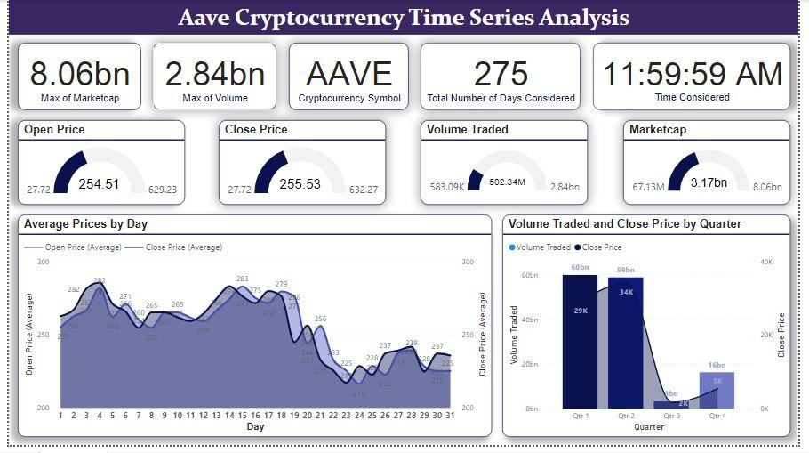

According to the Billionaire CEO of Tesla and SpaceX, Elon Musk, “Engineering is the closest thing to magic that exists in the world.”
But what if the magicians are overwhelmed with stress?
This report analyzes data collected from engineering students regarding their sleep quality, headaches, academic performance, study load, extracurricular activities, and stress levels.
The dataset was gotten from Kaggle created by Samyak B titled “Student stress factors”. The sole purpose of the dataset is to understand what Impacts Stress of Engineering students the most...
Tools/Software used: Kaggle | Microsoft Excel | Power BI | DAX | Power Query

A business intelligence analysis on a dataset for a cryptocurrency product, the "Aave". This cryptocurrency, offered by the AAVE is the native digital asset of the company.
This dataset contains the marketcap, volume traded, open and close price for this coin at the end of the trading hours over a total of 275 days.
The dataset is for the year 2020 and 2021.
Upon concluding the analysis, several noteworthy findings emerged: ...
Tools/Software used: Kaggle | Microsoft Excel | Power BI
The dataset encompasses a survey of 630 data professionals across the globe taken in 2022.
As an unclean dataset, it went through thorough data cleaning using Power Query in Power BI.
Some of the wrangling operations carried out were grouping, (bin and list), removing irrelevant columns, averaging certain data, and splitting columns for analysis purpose...
Tools/Software used: Kaggle | Microsoft Excel | Power BI | DAX | Power Query
The Web3 landscape is rapidly evolving, and venture capitalists (VCs) are playing an increasingly crucial role in shaping its future.
To gain a deeper understanding of the dynamics of the Web3 VC landscape, we analyzed a dataset of 102 Web3 VCs, categorized into Angel, DAO, Exchange, VC, VC/Angel, VC/Defi, VC/Exchange, VC/KOL, VC/Marketing, VC/NFT, and VC/OTC...
Tools/Software used: Kaggle | Power BI
This analysis is considering the salary earned by different data experts alongside their job details like experience level, company size, employment type and the working culture of their company.
This particular analysis (and visualization) is really a great pointer to the fact that "Data is the oil of this century". The maximum salary earned by data professional (a data scientist) is 450,000 USD per annum...
Tools/Software used: Kaggle | Microsoft Excel | Power BI | DAX | Power Query
It's a beautiful Sunday morning, one that'd be good to quickly work on a web-scrapping project.
So, armed with enthusiasm and a cup of coffee, I delved into the realm of Web3, aiming to uncover insights that could shape the future of work in this exciting space.
While looking for some interesting jobs that I could apply for in Web3, I stumbled upon a list of top web3 cities in the world ranked by Web3 Jobs...
Tools/Software used: Microsoft Excel | Python | Numpy | BeautifulSoup
I did what nobody has done before.
No, that’s not a lie.
I created a dataset for CEOs/Founders that were fired from their own companies.
Oh! No! That record can be found everywhere across the web. It’s so simple that I shouldn’t have exaggerated it.
Not their names, not their genders, positions, reasons for exit, personal reactions, public opinion to the exit, company performance before exit, next moves, succession details, and not company performance a year after their exit...
Tools/Software used: Microsoft Excel | Bard AI (Now Gemini) | Numpy | BeautifulSoup
Attached below is the project I built (The raw data and the dashboard) in Excel along with the visualization. The process followed was Data mining — Data cleaning — Data preparation — Data Analysis — Data Visualization.
I’m lovingly enjoying this journey and I hope to complete the course soon and start to build on it for industry standards...
Tools/Software used: Microsoft Excel